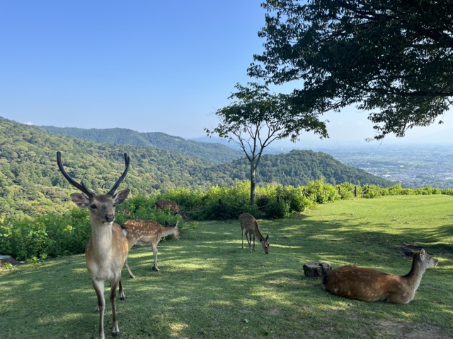

<div id="map-photos-handle" x-data="{
        init() {
            new Splide(this.$refs.splide, {
                perPage: 2,
                gap: '0.5rem',
                breakpoints: {
                    640: {
                        perPage: 1,
                    },
                },
            }).mount()
        },
		grPhotos: {},
		photoIndexArray: ['0','1','2','3','4',],
		photoLoadFromIndex: 0,
		photoLoadCount: 5,
		loadNextPhotos: function(start, end) {
			this.photoLoadFromIndex = this.photoLoadFromIndex + this.photoLoadCount;
			for (let i = 0; i < this.photoLoadCount; i++) {
				let j = 0;
				if (i + start >= end) {
					this.photoIndexArray[i] = j;
					j++;
				} else {
					this.photoIndexArray[i] = i;
				}
			}
		},
					
    }" x-init="grPhotos = await CMBRutil.connectCMBRjson(['grGeneralPhotos']);">

	<section x-ref=" splide" class="splide px-14" aria-label="photo">
		<div class="splide__track">
			<ul class="splide__list">

				<template x-for="(photo, index) in grPhotos" :key="index">
					<li class="splide__slide flex flex-col items-center justify-center pb-8">

						

					</li>
				</template>
				<li class="splide__slide flex flex-col items-center justify-center pb-8">
					
				</li>

				<li class="splide__slide flex flex-col items-center justify-center pb-8">
					
				</li>

				<li class="splide__slide flex flex-col items-center justify-center pb-8">
					
				</li>
			</ul>
		</div>
	</section>
</div>